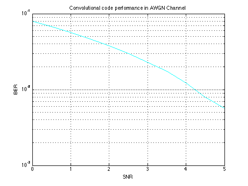
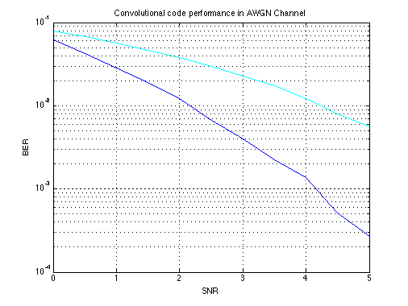
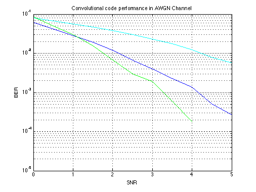
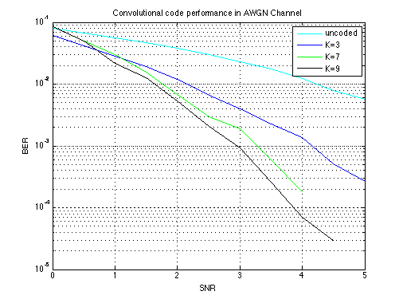

Convolutional code performance in AWGN Channel
Copyright 2007 Telecommunications Lab
Contents
Generate data and apply viterbi channel coding and modulate the data
M = 2; % BPSK modulation order tx = randint(100000,1,M); % Random bit stream %%%%%%%%%%%%%%%%%%%%%%%%%%%%%%%%%%%%%%%%%%%%%%%%%%%%%%%%%%%%%%%%%%%%%%%
Transmission without cahnnel coding
pskSig = pskmod(tx,M); SNR = 0:.5:5; % Range of SNR values, in dB. for n = 1:length(SNR) rxSig = awgn(pskSig,SNR(n),'measured'); % Add Gaussian noise. rx = pskdemod(rxSig,M); % Demodulate. % Compute error rate. [nErrors, BER0(n)] = biterr(tx,rx); end semilogy(SNR, BER0,'c','LineWidth',1.5); xlabel('SNR');ylabel('BER') grid on; title('Convolutional code performance in AWGN Channel');hold on; %%%%%%%%%%%%%%%%%%%%%%%%%%%%%%%%%%%%%%%%%%%%%%%%%%%%%%%%%%%%%%%%%%%%%%
Channel Coding
depth=3; Generator=[5 7]; trel = poly2trellis(depth,Generator); % Trellis code = convenc(tx,trel); % Encode the message. pskSig = pskmod(code,M); % PSK signal
Compute error rate for different values of SNR.
SNR =0:.5:5; % Range of SNR values, in dB. for n = 1:length(SNR) rxSig = awgn(pskSig,SNR(n),'measured'); % Add Gaussian noise. rx = pskdemod(rxSig,M); % Demodulate. decoded = vitdec(rx,trel,depth,'cont','hard'); % Decode. % Compute error rate. [nErrors, BER3(n)] = biterr(tx(1:end-depth),decoded(depth+1:end)); end semilogy(SNR, BER3,'b','LineWidth',1.5); %%%%%%%%%%%%%%%%%%%%%%%%%%%%%%%%%%%%%%%%%%%%%%%%%%%%%%%%%%%%%%%%%%%%%%%%%%% % %% [23 35] % depth=5; % Generator=[23 35]; % trel = poly2trellis(depth,Generator); % Trellis % code = convenc(tx,trel); % Encode the message. % % pskSig = pskmod(code,M); % PSK signal % % % Compute error rate for different values of SNR. % SNR = 0:.5:5; % Range of SNR values, in dB. % for n = 1:length(SNR) % rxSig = awgn(pskSig,SNR(n),'measured'); % Add Gaussian noise. % rx = pskdemod(rxSig,M); % Demodulate. % decoded = vitdec(rx,trel,depth,'cont','hard'); % Decode. % % Compute error rate. % [nErrors, BER5(n)] = biterr(tx(1:end-depth),decoded(depth+1:end)); % end % semilogy(SNR, BER5,'r','LineWidth',1.5); %%%%%%%%%%%%%%%%%%%%%%%%%%%%%%%%%%%%%%%%%%%%%%%%%%%%%%%%%%%%%%%%%%%%%%%%%%%
[133 171]
depth=7; Generator=[133 171]; trel = poly2trellis(depth,Generator); % Trellis code = convenc(tx,trel); % Encode the message. pskSig = pskmod(code,M); % PSK signal
Compute error rate for different values of SNR.
SNR = 0:.5:5; % Range of SNR values, in dB. for n = 1:length(SNR) rxSig = awgn(pskSig,SNR(n),'measured'); % Add Gaussian noise. rx = pskdemod(rxSig,M); % Demodulate. decoded = vitdec(rx,trel,depth,'cont','hard'); % Decode. % Compute error rate. [nErrors, BER7(n)] = biterr(tx(1:end-depth),decoded(depth+1:end)); end semilogy(SNR, BER7,'g','LineWidth',1.5); %%%%%%%%%%%%%%%%%%%%%%%%%%%%%%%%%%%%%%%%%%%%%%%%%%%%%%%%%%%%%%%%%%%%%%%%%%%
[561 753]
depth=9; Generator=[561 753]; trel = poly2trellis(depth,Generator); % Trellis code = convenc(tx,trel); % Encode the message. pskSig = pskmod(code,M); % PSK signal % Compute error rate for different values of SNR. SNR = 0:.5:5; % Range of SNR values, in dB. for n = 1:length(SNR) rxSig = awgn(pskSig,SNR(n),'measured'); % Add Gaussian noise. rx = pskdemod(rxSig,M); % Demodulate. decoded = vitdec(rx,trel,depth,'cont','hard'); % Decode. % Compute error rate. [nErrors, BER9(n)] = biterr(tx(1:end-depth),decoded(depth+1:end)); end semilogy(SNR, BER9,'k','LineWidth',1.5); legend('uncoded','K=3','K=7','K=9');% hold off;